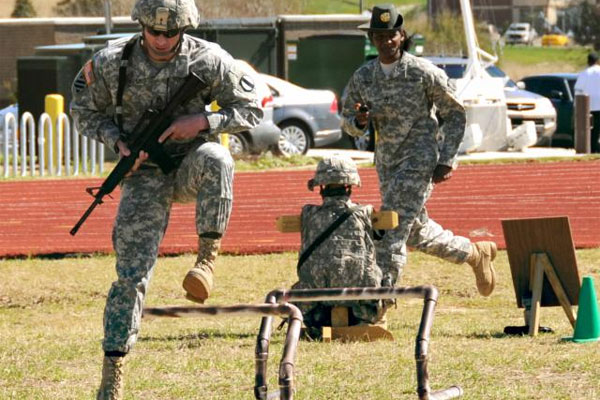

this is about the us army job. the army here As the oldest branch of the U.S. Military, founded in 1775, the Army is a powerful fighting force defending and serving our nation by land, sea and air.the jobs you qualify for, the Army breaks down your ASVAB subtest scores into groups known as line scores. Your ASVAB scores determine what occupations you qualify for in the military. Jobs in the Marine Corps are called "MOS" (short for Military Occupational Specialty).
To join the enlisted ranks, in general you must: Be a U.S. citizen or Green Card holder. ... Be in good health. Be 17 to 40 years old (different branches have different age requirements) Have a high school diploma (some branches will accept a GED) Pass the Armed Services Vocational Aptitude Battery (ASVAB) test
Army ROTC classes are electives available at over 600 colleges and universities and the Army ROTC has produced top politicians, financiers, entrepreneurs, and astronauts. You can let the Army ROTC help you shape your future and make your dreams a reality. Army ROTC is an elective curriculum you take along with your required college classes. It prepares you with the tools, training and experiences that will help you succeed in any competitive environment. Along with great leadership training, Army ROTC can pay for your college tuition, too. You will have a normal college student experience like everyone else on campus, but when you graduate, you will be an Officer in the Army. Being an Officer in the U.S. Army means you’re a leader, a counselor, a strategist and a motivator. It’s similar to being a vital manager in a corporation. As an Officer, you will lead other Soldiers in all situations and adjust in environments that are always changing. They are driven to achieve success with their team on every mission.